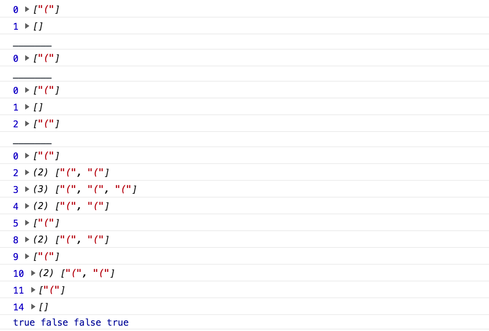

问题：给出下面的字符串，请编写函数来校验括号是否匹配，要求函数尽可能通用。
1
| let testString = "(()()()()";
|
方案
说明 类似问题使用栈数据结构的方式来进行匹配会比较合理。
1
2
3
4
5
6
7
8
9
10
11
12
13
14
15
16
17
18
19
20
21
22
23
24
25
26
27
28
29
30
31
32
33
34
35
36
37
38
39
40
41
42
43
44
45
46
47
48
49
|
class Stack {
constructor() {
this.data = [];
this.top = 0;
}
push(ele) {
this.data[this.top++] = ele;
}
pop() {
this.top--;
this.data.pop();
}
peek() {
return this.data[this.top - 1];
}
clear() {
this.top = 0;
this.data = [];
}
}
let stack = new Stack();
function matching(str) {
stack.clear();
str = str.trim();
for (let i = 0; i < str.length; i++) {
if (str[i] == " ") continue;
if (stack.peek() == "(" && str[i] == ")") {
stack.pop();
} else {
stack.push(str[i]);
}
console.log(i, stack.data)
}
return stack.top == 0;
}
let res1 = matching("()");
console.log("_______");
let res2 = matching("(");
console.log("_______");
let res3 = matching("()(");
console.log("_______");
let res4 = matching("( (()) ()() ) ");
console.log(res1, res2, res3, res4);
|
打印参考：

在上面代码中matching函数中通过普通 for 循环遍历字符串，尝试使用forEach遍历调整代码如下。
1
2
3
4
5
6
7
8
9
10
11
12
13
| function matching(str) {
let stack = new Stack();
str = str.trim();
if (str[0] == ")") return false;
[...str].forEach((s, i) => {
if (s == " ") return;
(stack.peek() == "(" && s == ")") ? stack.pop(): stack.push(s);
});
return stack.top == 0;
}
|
在上面代码中我自己提供了一个 Stack 类来实例化 stack 栈对象，在面试中这样写可能代码显得有点多，下面我使用字符串来模拟栈结构调整代码如下所示：
1
2
3
4
5
6
7
8
9
10
11
12
13
14
15
16
17
18
19
20
|
function matching(str) {
let len = 0;
let stack = "";
str = str.trim();
if (str[0] == ")") return false;
[...str].forEach((s, i) => {
if (s == " ") return;
if (stack[len - 1] === "(" && s == ")") {
len--;
stack = stack.slice(0, -1)
} else {
len++;
stack += s
}
});
return len === 0;
}
|